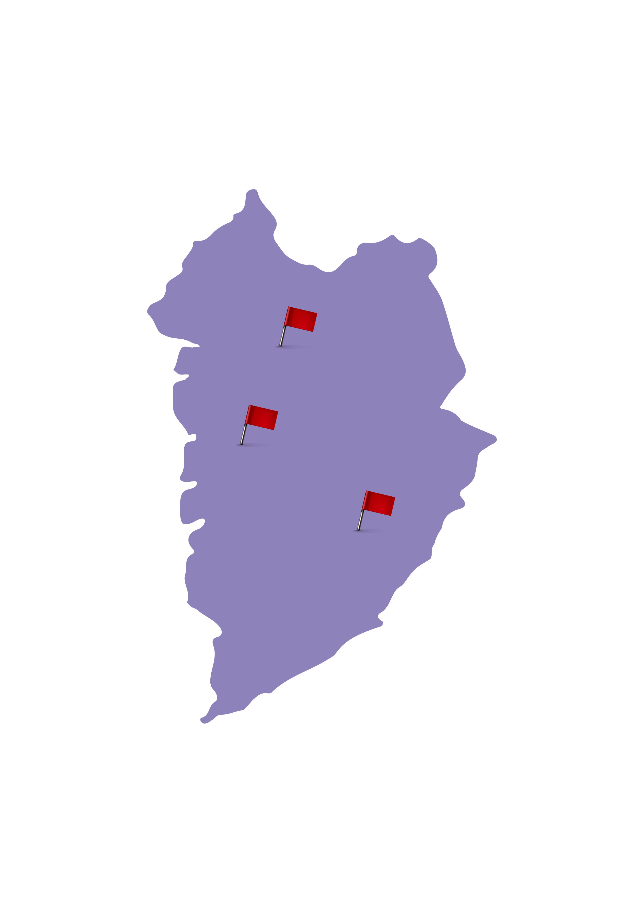
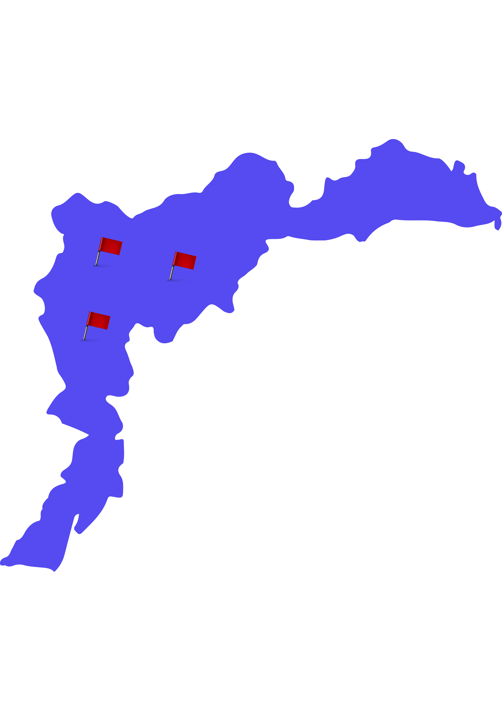
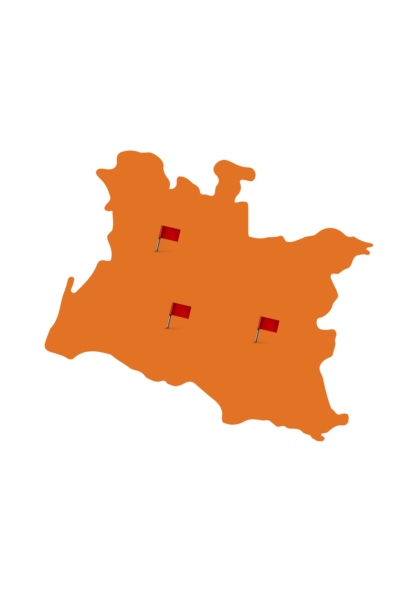
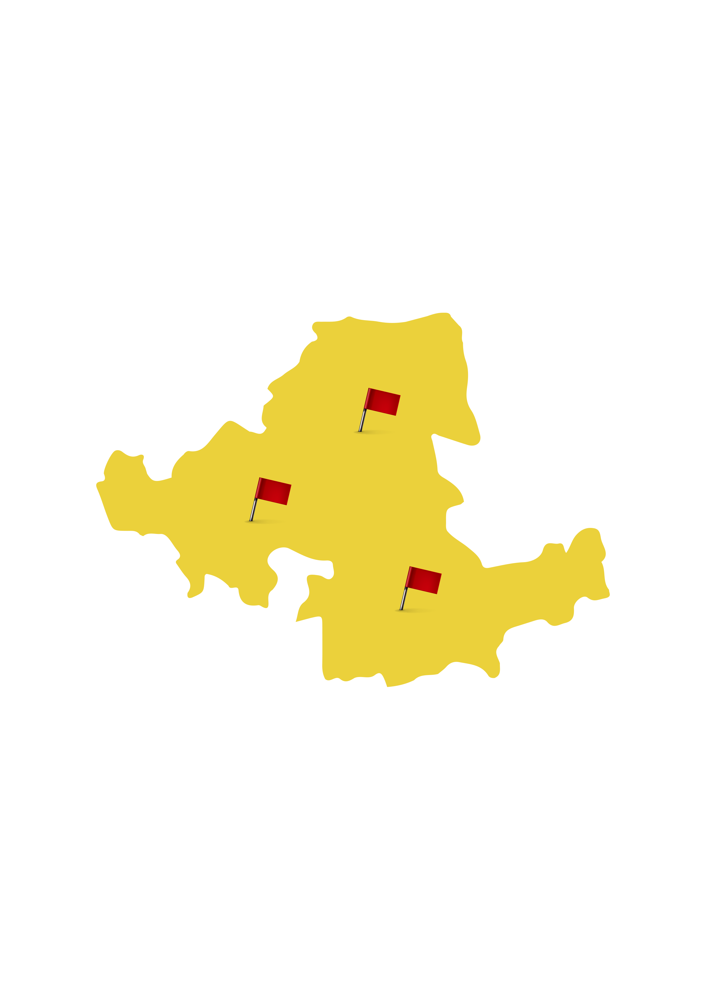
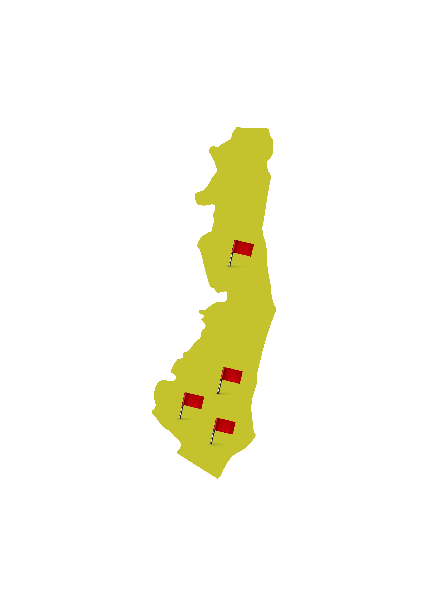

-
 Projeto Ativo
Projeto Ativo
- Extremo Oeste Baiano
- Vale São Francisco da Bahia
- Nordeste Baiano
- Centro Norte Baiano
- Centro Sul Baiano
- Metropolitana de Salvador
- Sul Baiano





Descubra um mundo de minerais fascinantes na nossa
Litoteca Virtual. Clique agora para explorar e desvendar
as maravilhas da geologia ao seu alcance. Não perca a
chance de mergulhar nessa jornada!
Clique na região escolhida para verificar os projetos ativos.
Projeto Ativo